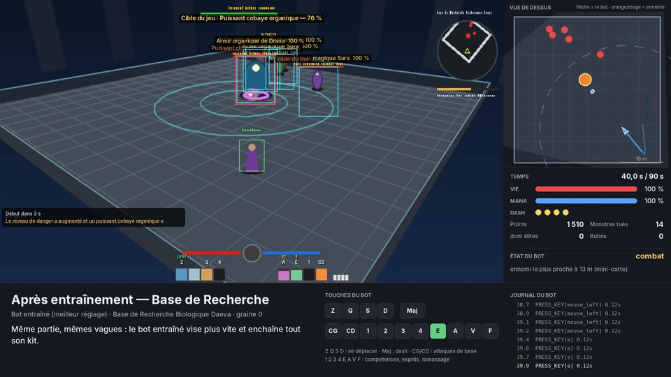
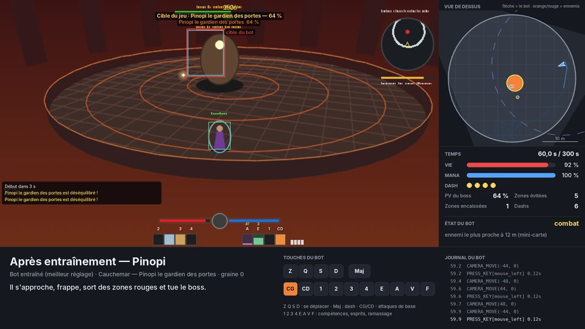
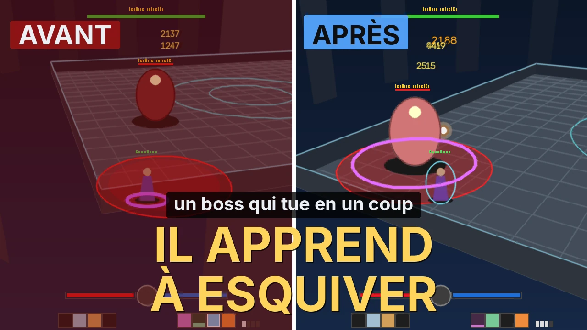

Un agent de combat entraîné en simulation
Le problème
Mon agent lit l'écran comme un joueur (les noms des monstres, la vie, la barre de compétences) et choisit ses actions. Le problème : en combat, il prenait de mauvaises décisions.
Ce que j'ai construit
Un framework Python de vision par ordinateur, un mode qui enregistre mes parties pour qu'il apprenne de moi par imitation, puis une arène simulée en 2,5D, façon premier Doom, calée sur mes propres enregistrements : même caméra, même image, mêmes touches. C'est dans ce simulateur qu'il s'entraîne et qu'il est évalué, sans lancer le jeu.
- Terrain d'étude
- AION 2 (MMORPG), calé sur mon Spiritualiste niveau 45
- Période
- Octobre 2026
- Méthode
- Conception (architecture, simulateur, protocole d'évaluation), tests et réglages par moi ; code co-écrit avec Claude et Claude Code
- Volume
- ≈ 29 000 lignes de Python, plus 740 tests pytest
- Livrables
- Application Windows (PySide6), simulateur, 9 parties types filmées
Chaîne de décision
-
01
Capture
L'écran ou la fenêtre du jeu, réduite en 640 × 360, à 7 images par seconde.
-
02
Détection
YOLO, ou repérage des plaques de nom des monstres en ≈ 3 ms par image, sans carte graphique.
-
03
État du monde
Cibles, distances, vie et mana lus dans l'interface, objets gardés en mémoire s'ils disparaissent un instant.
-
04
Décision
Machine à états (recherche, approche, combat, butin, retour) ou cerveau entraîné dans le simulateur.
-
05
Action
Clavier et souris, en simulation par défaut ; F12 arrête tout et relâche les touches.
Étape 1
Apprendre de mes parties
Le mode REC DÉMO enregistre ce que je vois et ce que je fais au même instant : chaque image est alignée avec l'état du clavier et de la souris. Une politique supervisée en tire les déplacements (neuf directions), les arrêts, la caméra et les dashs. Quand elle doute, elle s'abstient et les règles reprennent la main.
- exemples de pilotage tirés de 8 sessions
- 1 864
- d'exactitude sur une session jamais vue, contre 21,6 % pour la classe majoritaire
- 39,4 %
- de F1 sur les touches de déplacement
- 0,62
Limite mesurée : la caméra apprise généralise encore mal, il faut plus de démos cohérentes.
Étape 2
Une arène calée sur le vrai jeu
Le monde est une carte 2D en mètres, projetée en 2,5D par une caméra placée comme celle d'AION 2. J'y ai recréé le kit de mon Spiritualiste, ses esprits et leurs règles. L'agent n'y voit que ce qu'il lirait à l'écran : cadres des plaques de nom, vie, mana, compétences prêtes, rouge au sol et mini-carte. Pas de triche.
| Calage | Mes REC | Simulation |
|---|---|---|
| Base de Recherche, 90 s | 3 720 points | ≈ 3 400 points |
| Boss Pinopi | vaincu en 168 à 204 s | ≈ 181 s |
| Île des Esprits (farm) | ≈ 9 s par monstre + 3 s | ≈ 10 monstres en 2 min |
Étape 3 · méthode de l'entropie croisée
L'entraînement
Son comportement tient en 32 réglages lisibles : à quelle distance fuir, le gain de la caméra, la probabilité d'utiliser chaque compétence, quand dasher. Au départ, mes habitudes mesurées dans mes REC. À chaque génération, des variantes jouent tous les scénarios et les meilleures donnent la suivante. Le nouveau cerveau n'est gardé que s'il bat l'ancien sur des parties jamais vues.
- meilleure variante
- moyenne des 16 variantes
Validation, parties jamais vues
16,9 → 19,2
sur 20, en ≈ 7 minutes d'entraînement. Avec le boss intuable en 4e scénario : 15,9 → 18,5.
Barème de la note /20
- Dégâts, comparés à un expert scripté
- 8
- Survie
- 6
- Objectif, comparé à mes résultats
- 4
- Propreté (appuis perdus)
- 2
Calcul sur tous les cœurs du processeur, sans affichage. Chaque partie se rejoue à l'identique : même scénario, même cerveau, même graine.
Avant, après : neuf parties types filmées
Mêmes scénarios, mêmes vagues, note sur 20.
- version à règles (sans apprentissage)
- avant entraînement (mes habitudes)
- après entraînement
Base de Recherche · vagues d'ennemis, 90 s
mort à 74 s · 3 290 points · 5 640 points
Pinopi · boss du Cauchemar
ne frappe jamais, mort à 59 s · boss vaincu en 157 s
Boss intuable · chaque coup tue
mort en ≈ 2 s · mort en 15 s · 90 s sans mourir
Île des Esprits · farm, 2 min


Le boss intuable
Ce qu'il a appris tout seul
Un scénario fait pour ne jamais rester au contact : salle carrée de 36 m dont les coins piègent, chaque coup tue, frappe annoncée 0,8 s avant par une zone rouge.
- fuir dès que le boss est à moins de ≈ 13 m ;
- dasher à chaque frappe annoncée ;
- quitter les murs et les coins ;
- continuer à attaquer en reculant.
Mon rythme
7 morts
sur 10 parties de 90 s, 39 % du temps au corps à corps
Agent entraîné
0 mort
8 % du temps au corps à corps, 1 % collé à un mur
Garde-fous et rigueur
Externe uniquement
Il observe l'écran et produit des entrées, rien d'autre : ni injection, ni lecture mémoire, ni fichier du jeu modifié. Un test vérifie que ces techniques n'apparaissent pas dans le code.
Sûr par défaut
Mode simulation activé au démarrage. Arrêt d'urgence par F12, bouton STOP ou souris dans un coin ; toutes les touches sont relâchées à la perte de focus.
Reproductible
Même graine, même partie. Filmer ne change rien (vérifié par un test). Chaque essai se revoit image par image : décisions, touches, souris et vrai trajet.
Honnête sur ses limites
La note mesure le simulateur, pas le vrai jeu. Un gain de dégâts ou de survie en jeu n'est pas encore démontré : c'est la prochaine étape.

Vidéo YouTube en montage
J'entraîne mon bot AION 2 dans une simulation façon Doom
Un montage d'environ 4 min 26, refait par script à partir des parties filmées du simulateur : le problème, l'arène, l'entraînement, puis le duel contre le boss intuable.
Technologies
- Python 3.12
- PySide6
- OpenCV
- NumPy
- Ultralytics YOLO
- mss
- PyAutoGUI
- SQLite
- pytest
- Apprentissage par imitation
- Entropie croisée (CEM)
- FFmpeg